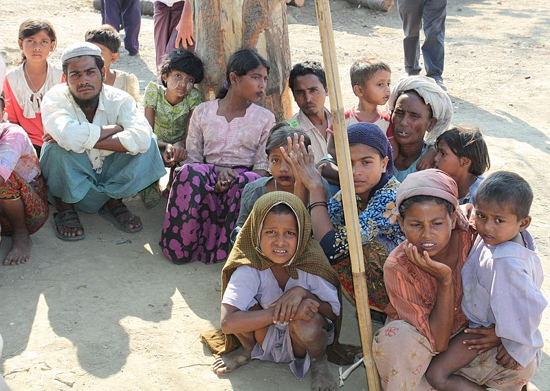

Reported by: Mtm Sujan
In this undated AFP file photo rohingya refugees queue for food at the kutupalong refugee camp in Bangladesh .
According to media reports, the indian Border Security Force took back 31 stranded Rohingas from the no-man's land in the india bangladesh border near barhmanbaria after a five day impasse, whice ensure after a bsf attemp to push them into bangladesh was met with stiff resistance from the border guard bangladesh. Since the beginning of the year, no less than 1300 rohingya muslims crossed the border into bangladesh from india. where many of them had been liviling for years. Before this, on january 3, 2019 , india deported a family of five rohingyas, and last year , seven rohingya muslims were deported to myanmer by the government despite appeals from the United Nation not to illegally obtained travel documents.
The rohingyas are a muslim ethnic minority group based in myanmer's rakhine state. According to many hisorians, they are descendants of arab traders and other groups who, in the 15th centuay, migrated , previously called the kingdom of arakan. Despite their considerable numbers and established local roots, successive governments in myanmer have rejected the rohingya's historical claims and denimed them recognition as one of the country's 135 official ethnic groups, claming they are illegal immigrants. they are denied basic human right and treaed like animal with no access to education, medicine, or other government services. they are not even allowed to move freely or leave their settlements in rakhine without government approval. many are internally displaced in their own birthplace, living like refugees.
Things got worce when militants attacked secuarity forces in northern rakhine state on august 25, 2017 In response, the mayanmar army launched a ruthless campaign against the rohingyas fashioned im the style of the japanese war tactic -- "burn all,kill all , destroy all". The army and its collaborators slaughtered thousandsof civilians,raped girl woman while family members were tortured and killed, and burned their houses, forcing hundreds of thousands to flee their homes. Since then , the rohingyas have been trying to escape by sea to malaysia , Indonesia and thailand but unfortunately , none of these countries allowed them to enter their territory, claiming they are finnacially unable to accept or host them and so their boates were turned away.
In world where so many borders are closed, Bangladesh , itself a poor country and one of the world's most densely populated, welcomed the rohingyas by opening its border. Since August 2017, over 750,000 rohingya have crossed into bangladesh. For bangladesh , the rohingya refugee influx is not a new phenomenon. Different media reports confirm that between 1974 and 2016, more than 260,000 rohingyas fled rakine thanks to human right abuses committed by the malaysia military , including the confiscation of land, forced labour, rape , and torture. Bangladesh has continuted to take in another 11,432 rohingyas since the beginning of 2018 throught the end of june 2018. Currently , more than a million rohingya refugees are liviling in mostly makeshift camps in cox's bazar.
it should be noted that the degree of violence endured by rohingyas since august 25, 2017 was new , but their experirnce official of oppression was not. Since the 1970s, the rohingyas have faced state sponsored persecution and have long endured severe discrimination in the buddhist majority myanmer , and were targets of communal violence. In 1982 , the myanmer government effectively institutionalised discrimination against the rohingyas by introducing a citizenship law. under the law , rohingyas were not recognised as one of the country's 135 ethnic groups . restrictions was imposed on their right to study , marriage , employment , education , religious choice , and freedom of movements, leaving them vulnerable to abuse . for years , they have been liviling a miserble life , suffered considerable tranma as a result of the widespread campaign of murder, rape and arest.
For More Inquiry please visit below attached link.
www.aljazeera.com